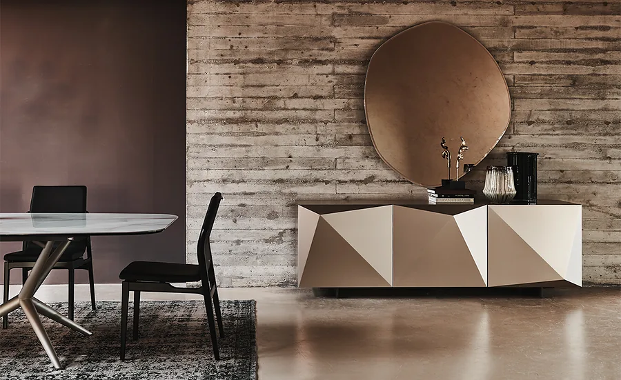
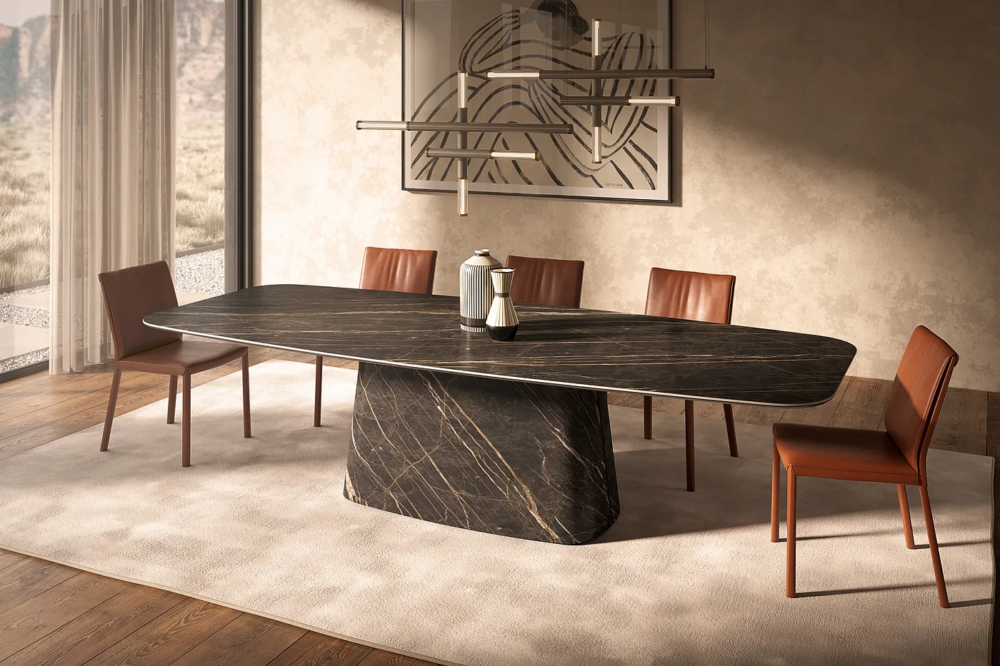
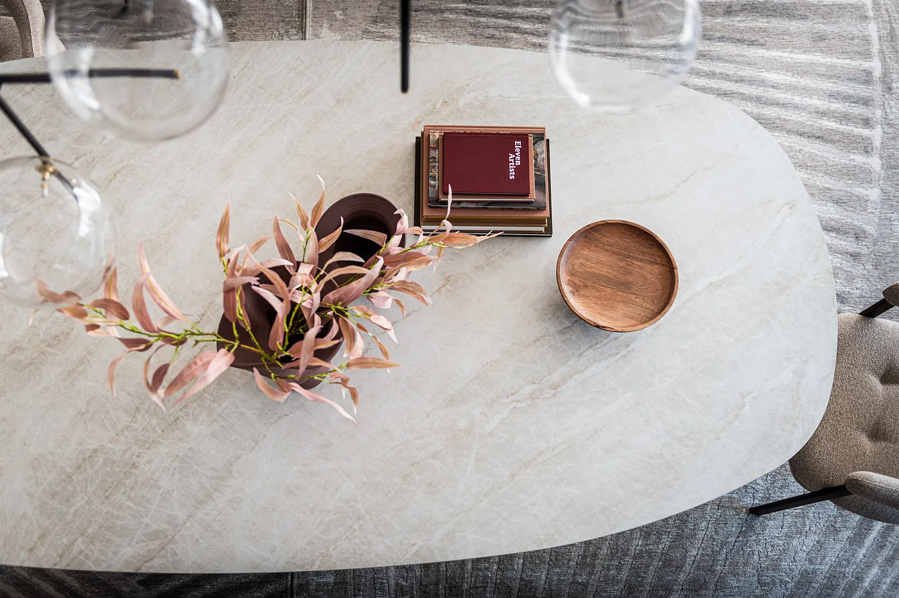
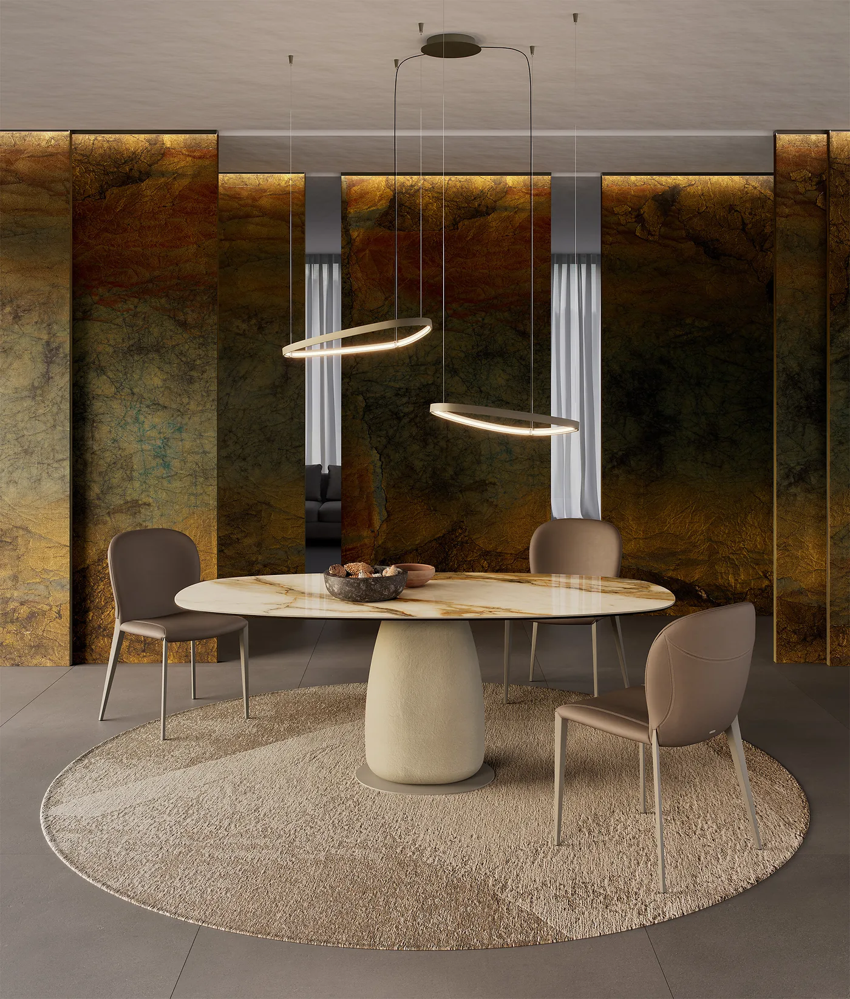
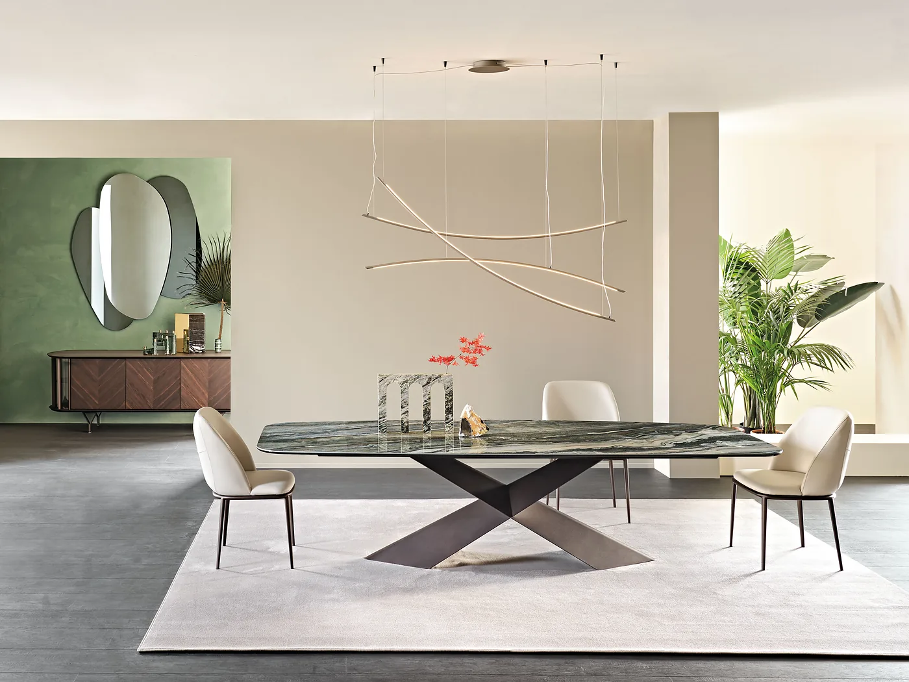
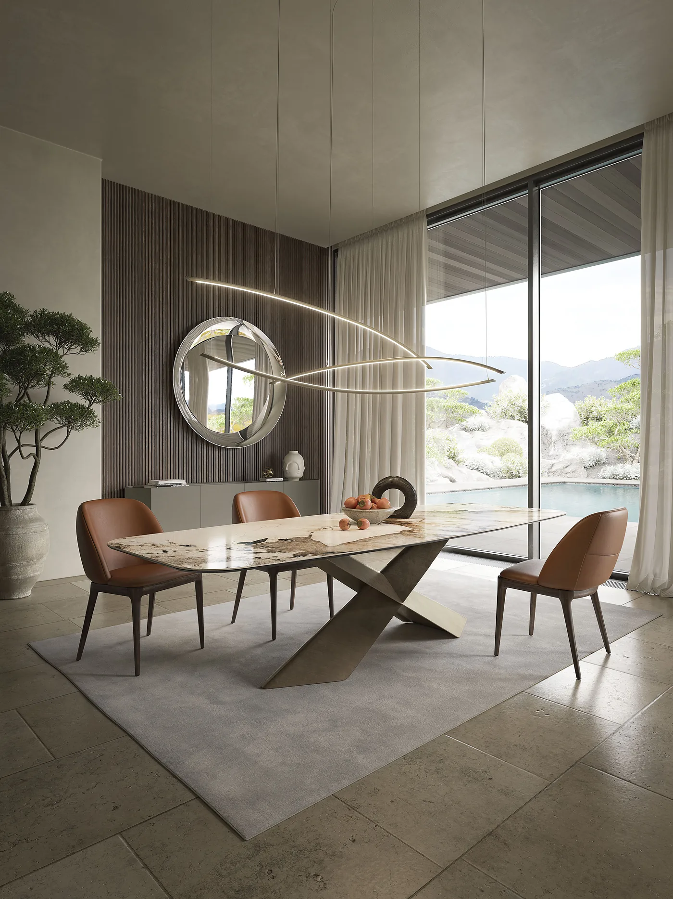
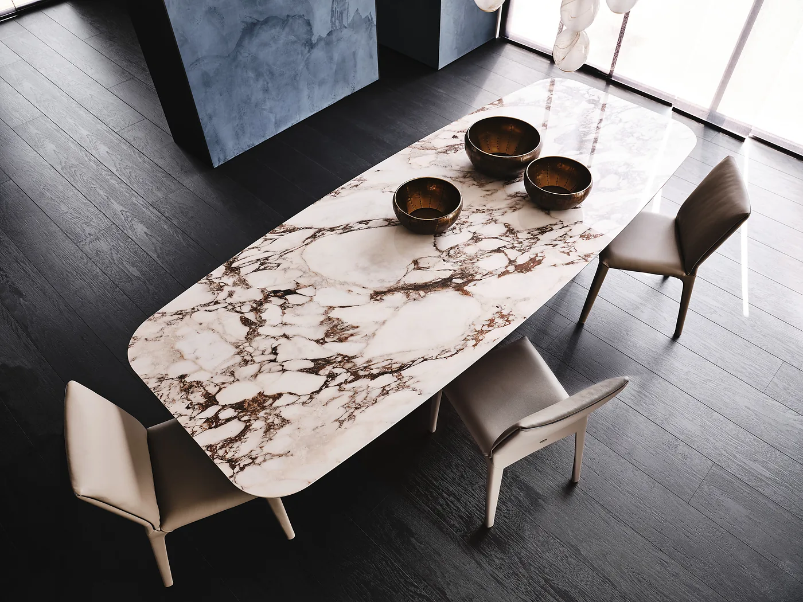
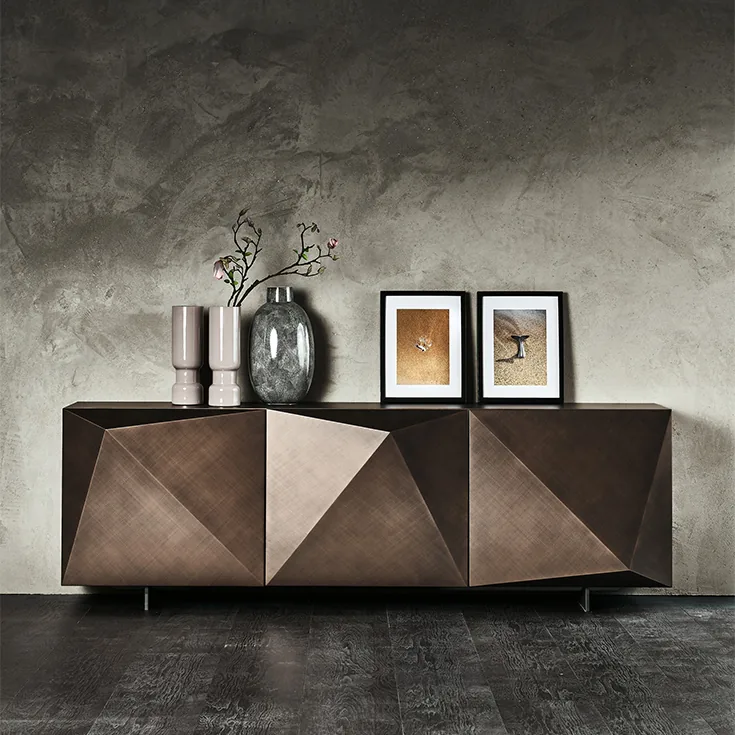
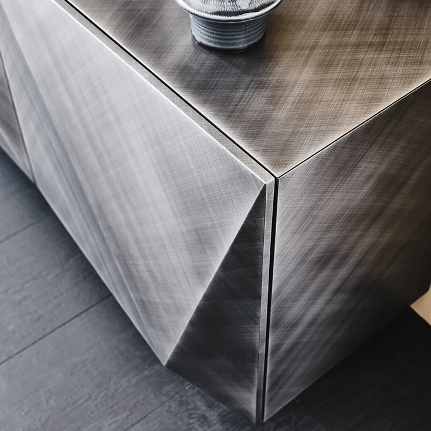
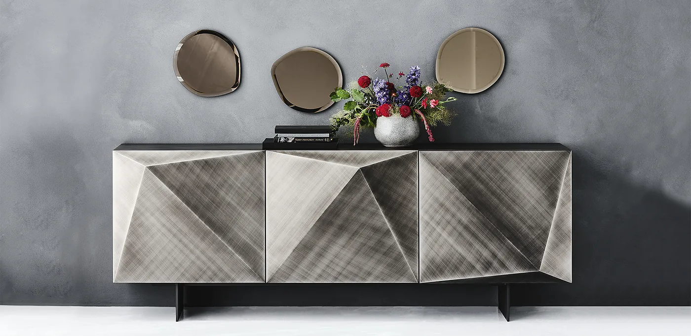

L’excellence du design italien
Cattelan Italia
Fondée en 1979 par Giorgio et Silvia Cattelan, la maison donne du caractère aux intérieurs par les matières, les lignes et les détails de finition.
- Maison fondée en 1979
- Tables fabriquées en Italie
- Première visite et conseil offerts

La maison
Des tables aux dressoirs, un même goût du détail.
L’univers Cattelan Italia va des tables et des chaises aux buffets et dressoirs, bibliothèques, consoles et luminaires. Au magasin, nous vous accompagnons dans le choix des modèles de notre sélection et de leurs finitions.
Notre sélection ne reprend pas tout le catalogue du fabricant : demandez-nous les références disponibles.
Voir notre sélectionNotre sélection
Des tables à choisir sur catalogue.
-



01Napoleon Keramik
Plateau en céramique effet travertin clair ou effet marbre sombre, et pied central assorti.
-


02Botero Keramik
Un pied central aux formes rondes, plateau ovale ou rond en céramique.
-



03Tyron Keramik
Piètement croisé en métal, grand plateau en céramique marbrée.

Buffets et dressoirs
Un dressoir qui accroche la lumière.
-



01Kayak
Dessiné par Andrea Lucatello, avec des façades à facettes. En deux portes (147 cm) ou trois portes (220 cm), profondeur 53 cm, hauteur 73 ou 83 cm. Finition titane, bronze brossé ou gris brossé. Sur commande.
Voir aussi
Les autres tables.
-
Sedit
Céramique ou bois, fabriquées en Italie.
Voir les tables Sedit -
Akante
Des rallonges qui s’ouvrent en un geste.
Voir les tables Akante -
Perfecta
Des tables à composer, avec leurs chaises.
Voir les tables Perfecta -
Toutes nos tables
Et les chaises qui vont avec.
Voir la salle à manger
Dans nos réalisations
-
Photo d’illustration Cattelan Italia, table Tyron : pas la table livrée Salle à manger
Cattelan Italia · Une table prend place
Une table Tyron de Cattelan Italia, plateau en céramique, à découvrir dans la salle à manger qui l’accueille.
Composons votre salle à manger Cattelan Italia.
Tables et dressoirs Cattelan Italia se choisissent sur catalogue : dimensions, plateaux et finitions au choix.
- Lundi
- 13h30 – 18h30
- Mardi au samedi
- 10h30 – 18h30
- Dimanche
- Fermé
- Téléphone
- 064 46 07 72
- Livraison
- Par nos soins, dans le Hainaut (Binche, La Louvière, Mons, Charleroi…) et la province de Namur
Nous livrons aussi dans le nord de la France. Ailleurs, dont Bruxelles : sur demande.